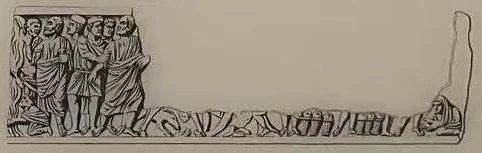
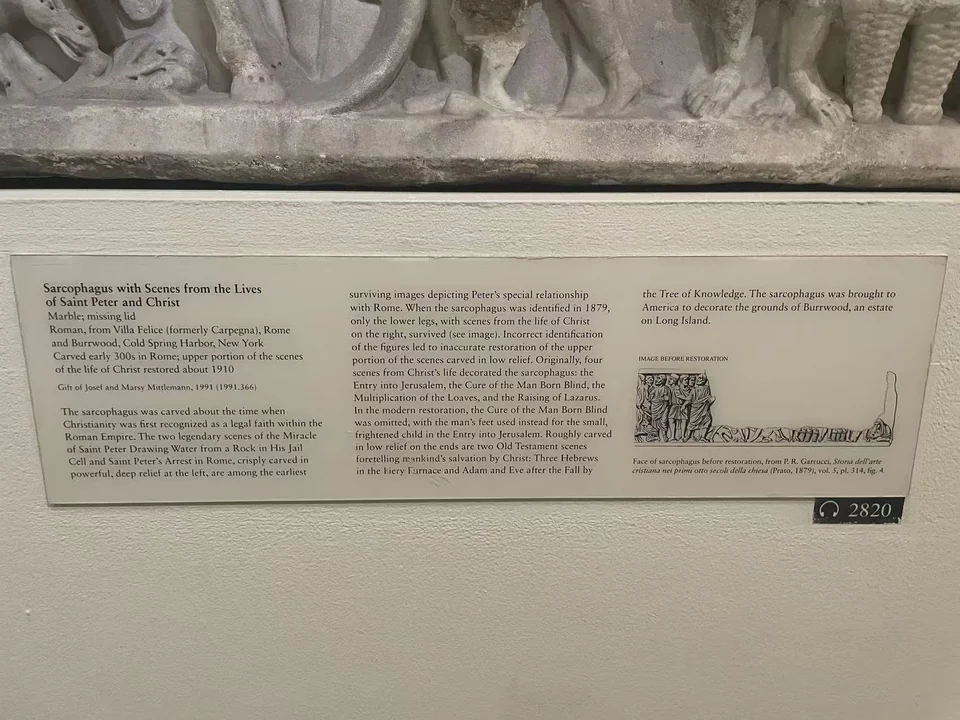

ROMAN SARCOPHAGI / R25
圣彼得与基督生平场景石棺
今天看见的这件石棺，由4世纪初的原雕与约1910年的补刻共同构成。左端彼得的故事仍有层层挤出的身体；向右看，较平缓的衣褶与人物上身，却带着近代修复者重新讲述故事的痕迹。

- 年代
- 4世纪初，含约1910年补刻
- 材料
- 大理石
- 形制
- 棺身，原棺盖缺失
- 尺寸
- 67.3 × 212.1 × 61.9厘米
- 馆方文化分类
- Roman（罗马）
- 收藏
- 纽约大都会艺术博物馆
- 观看地点
- 纽约大都会艺术博物馆 · 纽约
- 馆内位置
- 第五大道主馆；官网记300厅（核查于2026-11-08）
- 馆藏号
- 1991.366
- 制作地区
- 罗马
哪些部分保存了古代雕刻？
左端的人物肩膀相叠，衣褶深处留下浓重阴影，几颗头颅伸出棺沿，把场景推向观者。Evans把这种深钻、层叠的处理与4世纪初罗马浮雕联系起来。中央至右侧则大面积补入人物上部，原雕的脚、衣摆和篮筐仍留在下方；彼得被捕一幕中，靠近入城场景的抓捕者也并非完整古刻。 [51]
分辨这些阶段，需要把断裂接合、1879年图版与同类图像放在一起核对。Evans指出横向断口与彼得身侧的竖向接缝，并比较接合处的雕刻差异；她的判断不是仅凭人物有没有胡须。 [51]
原来讲什么，如今又看见什么？
从左向右，先是彼得在牢狱中使岩石出水，再是他被捕。这是与彼得在罗马的活动相联系的传说叙事。随后转入基督的生平：馆方采用的原场景辨认包括进入耶路撒冷、医治生来失明者、增饼神迹和使拉撒路复活。 [48]
现状中入城场景占得较宽，有一个依偎成人的受惊小孩。Evans重新考察下部脚的方向与篮筐的排列，提出这些遗存还容纳了医治盲人的一幕；近代补刻把相关脚部接成小孩，遂改写了场景之间的关系。这里重建的是原有叙事的安排，失去的上半部不能当作仍有古刻可看。 [51]
修复如何改变故事
历史图留下空缺，近代补刻把空缺接成完整人物；研究再从下方残存的线索，重新判断空缺原来容纳的故事。下面的现状与旧图可以对读，但版画对细节也有取舍，不是测绘式的修复分界。 [51]


- 1879年图版
- 彼得场景与右侧下部仍在，上部大片缺失；旧著录只辨出三组基督场景。
- 约1910年补刻后的现状
- 入城、增饼、拉撒路复活被接成完整场景；医治盲人未被保留。
- Evans的研究及现行馆录
- 结合脚部、篮筐与同类作品，恢复四组基督场景的辨认。
旧形式中的救助与复活
一段长长的浮雕，让出水、入城、医治、增饼与复活接连发生。读者沿石面移动，便从被囚者的困境走向救助与生命的恢复。它与马库斯·克劳狄亚努斯石棺共有连续叙事的形式，却又因现代补刻，让“如何读古代故事”多了一层需要辨别的历史。 [48] [13]
两侧还有“三青年在火窑中”与“亚当、夏娃与知善恶树”，馆方把它们联系到救赎主题。这次合影只见正面；侧面的辨认依据馆录与Evans论文图2、3。古典浮雕的形式并没有在一个确定年份突然退场，而是与新的题材继续相处。 [48] [51]
从罗马花园到纽约
现场展牌记载罗马Villa Felice（原Carpegna）及纽约长岛Burrwood庄园的收藏经历。Evans考察旧记录后认为，它可能约在20世纪初来到Burrwood，且很可能当时已经补刻；至1926年，庄园图像已显示它被用作花园喷泉的基座。1991年，Josef与Marsy Mittlemann将其捐赠大都会。 [51] [48]
从另一个角度看

现场展签 · 1张
